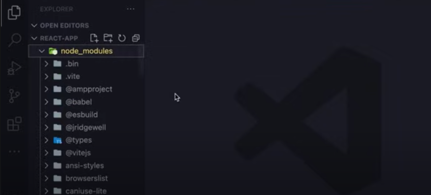
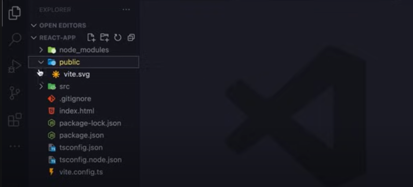
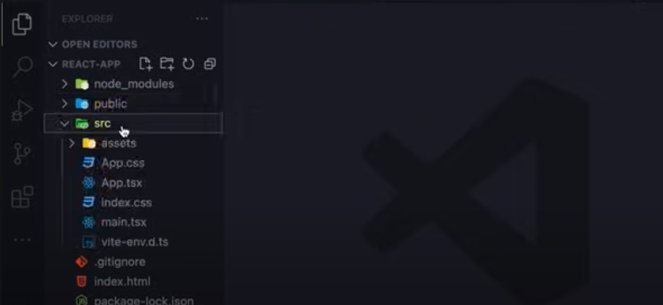
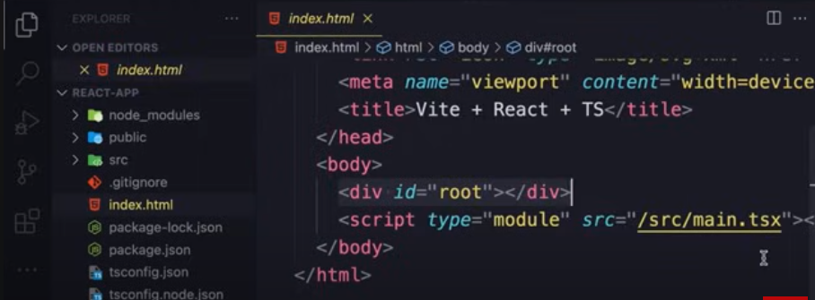
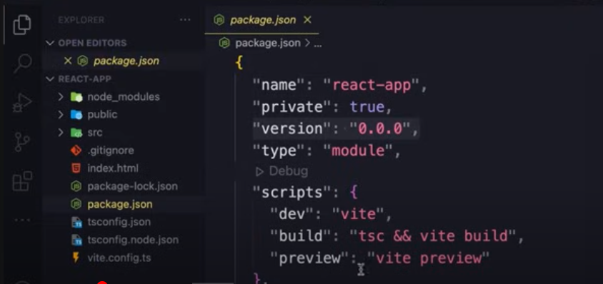
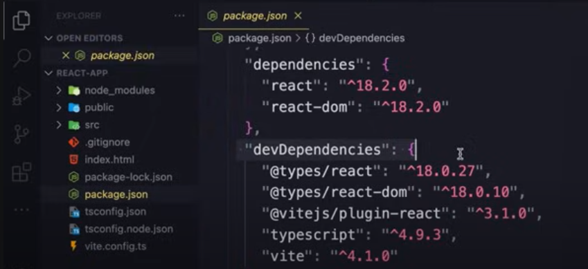
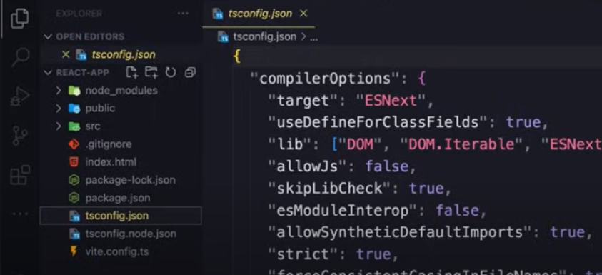
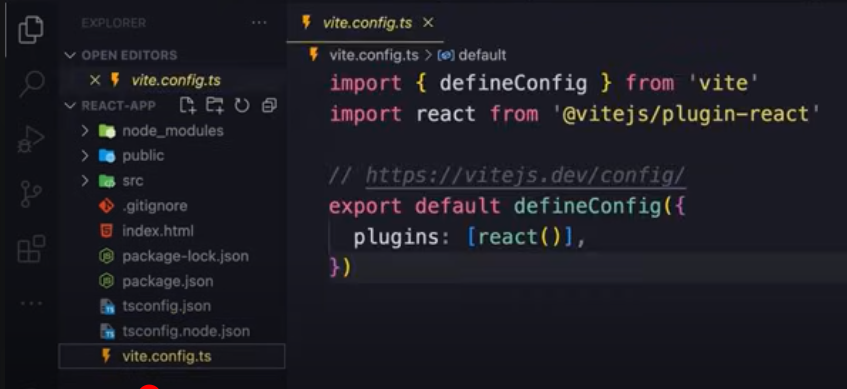

HOME
Project Structure
node_modules
This is where third party librarys like react, or other tools are
installed.
You'll never have to touch this folder.

public
This is where the public assests of our site is located.
Imgs, vids, ect..

src
This is the source code of our application.

Currently, we have a component called 'App'
We are going to write all this code crom scratch.
Just take note that we have a single component called 'App'
index.html
Outside all the folders we have a few files.
Look at index.html

The div with id of root is the container for our application.
The script element is the entry point of our application.
package.json
This holds info about our project like its name, version, you'll see
some scripts...

Below that we have info about the projects dependencies...

You can see that we are dependant on 2 libraries.
We also have several devDependencies, these are only needed for
development and will not be deployed with our app in the future.
tsconfig.json
These are settings for telling our compiler how to compile our
Typescript code to JS
Unless you are an advanced user, you will likely never have to touch
this file.

vite.config.ts
Vite configuration. You will also likely never have to mess with this
file.
